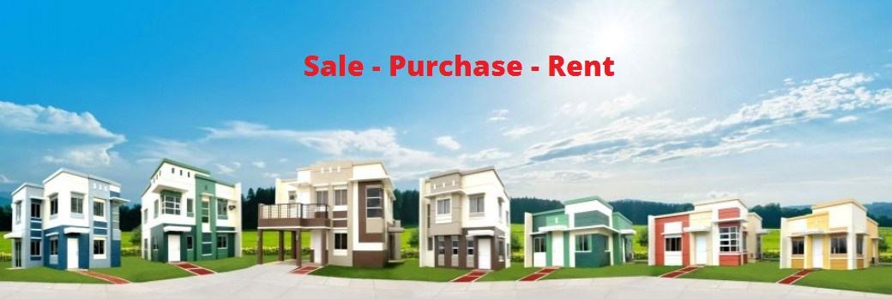

Real Estate
Founded in 2003, RealEstate.com has become the Luxembourg property portal. Since its inception, RealEstate.com has helped millions of Luxembourgers to buy and sell sell house, read house reviews and news, check property prices and find solutions to all their needs property. Today, RealEstate.com is the first name that comes to mind if someone is looking for a solution to their property needs. RealEstate.com receives more than 25 million visitors each year who view more than 250 million pages on the site. Just last year, almost 50% lux internet population visited RealEstate.com to buy and sell more than 400,000 cars. This type of success has made RealEstate.com a leading name in the global e-commerce and classifieds sectors and raised 3.5 millions of US dollars in his first round. RealEstate.com is not only a hub where buyers and sellers can interact, but it's also a complete property portal with a dedicated forum for all property discussions, a blog that keeps users abreast of the latest events in the property industry. luxembourg and the world in general. There is also a separate magazine section for all house available in luxembourg and much more! At RealEstate.com, we believe it is our responsibility to provide our visitors with the best online experience and that is what our mission is about: revolutionize and permanently value the way people buy and sell house online in Luxembourg. Our goal is to provide our users the most comprehensive property knowledge in Luxembourg and around the world and help them develop a sense of belonging in the property community. Our motto reflects our vision:
